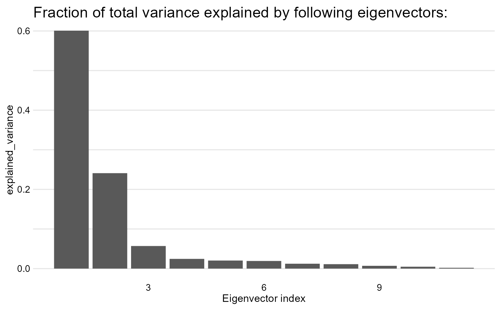

R/PCA.R
PCA.RdThis function returns principal components and their associeted eigenvectors - PCA
PCA(df, standardize = TRUE, plot_explained_variance = TRUE)A data frame
- boolean - whether you want to automatically standardize your data
- boolean - whether you want to plot the proportion of explained variance by next vectors
The function returns eigenvectors with their according principal components in PCA. Additionally displays a plot of explained variance in data.
library(ggplot2)
#> Warning: package 'ggplot2' was built under R version 4.2.3
PCA(mtcars, standardize = TRUE, plot_explained_variance = TRUE)
#> The results are calculated for a standardized version of your data frame!

#> $Eigenvalues
#> [1] 6.60840025 2.65046789 0.62719727 0.26959744 0.22345110 0.21159612
#> [7] 0.13526199 0.12290143 0.07704665 0.05203544 0.02204441
#>
#> $Eigenvectors
#> [,1] [,2] [,3] [,4] [,5] [,6]
#> [1,] 0.3625305 -0.01612440 -0.22574419 0.022540255 -0.10284468 0.10879743
#> [2,] -0.3739160 -0.04374371 -0.17531118 0.002591838 -0.05848381 -0.16855369
#> [3,] -0.3681852 0.04932413 -0.06148414 -0.256607885 -0.39399530 0.33616451
#> [4,] -0.3300569 -0.24878402 0.14001476 0.067676157 -0.54004744 -0.07143563
#> [5,] 0.2941514 -0.27469408 0.16118879 -0.854828743 -0.07732727 -0.24449705
#> [6,] -0.3461033 0.14303825 0.34181851 -0.245899314 0.07502912 0.46493964
#> [7,] 0.2004563 0.46337482 0.40316904 -0.068076532 0.16466591 0.33048032
#> [8,] 0.3065113 0.23164699 0.42881517 0.214848616 -0.59953955 -0.19401702
#> [9,] 0.2349429 -0.42941765 -0.20576657 0.030462908 -0.08978128 0.57081745
#> [10,] 0.2069162 -0.46234863 0.28977993 0.264690521 -0.04832960 0.24356284
#> [11,] -0.2140177 -0.41357106 0.52854459 0.126789179 0.36131875 -0.18352168
#> [,7] [,8] [,9] [,10] [,11]
#> [1,] 0.367723810 -0.754091423 0.235701617 0.13928524 0.124895628
#> [2,] 0.057277736 -0.230824925 0.054035270 -0.84641949 0.140695441
#> [3,] 0.214303077 0.001142134 0.198427848 0.04937979 -0.660606481
#> [4,] -0.001495989 -0.222358441 -0.575830072 0.24782351 0.256492062
#> [5,] 0.021119857 0.032193501 -0.046901228 -0.10149369 0.039530246
#> [6,] -0.020668302 -0.008571929 0.359498251 0.09439426 0.567448697
#> [7,] 0.050010522 -0.231840021 -0.528377185 -0.27067295 -0.181361780
#> [8,] -0.265780836 0.025935128 0.358582624 -0.15903909 -0.008414634
#> [9,] -0.587305101 -0.059746952 -0.047403982 -0.17778541 -0.029823537
#> [10,] 0.605097617 0.336150240 -0.001735039 -0.21382515 0.053507085
#> [11,] -0.174603192 -0.395629107 0.170640677 0.07225950 -0.319594676
#>